Les incontournables
Les classiques
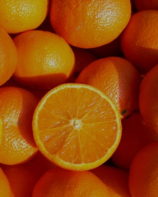
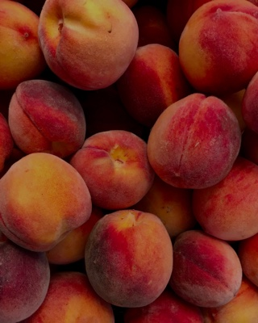
Ingrédients
- Vodka
- Jus d'orange
- Jus d'ananas
- Liqueur de pêche
- Coulis de fruits rouge
- Glaçons
« Le coulis de fruits rouge maison fait toute la différence. »Ce cocktail pour mon événement
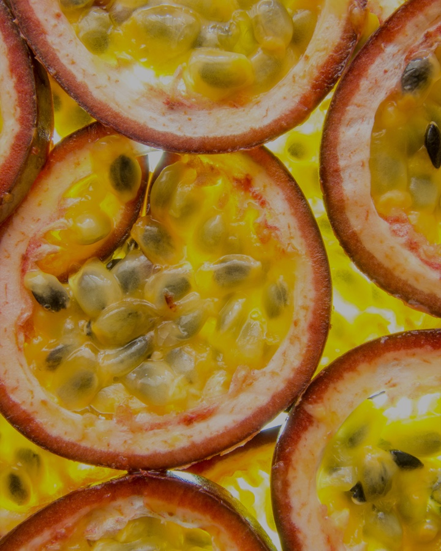
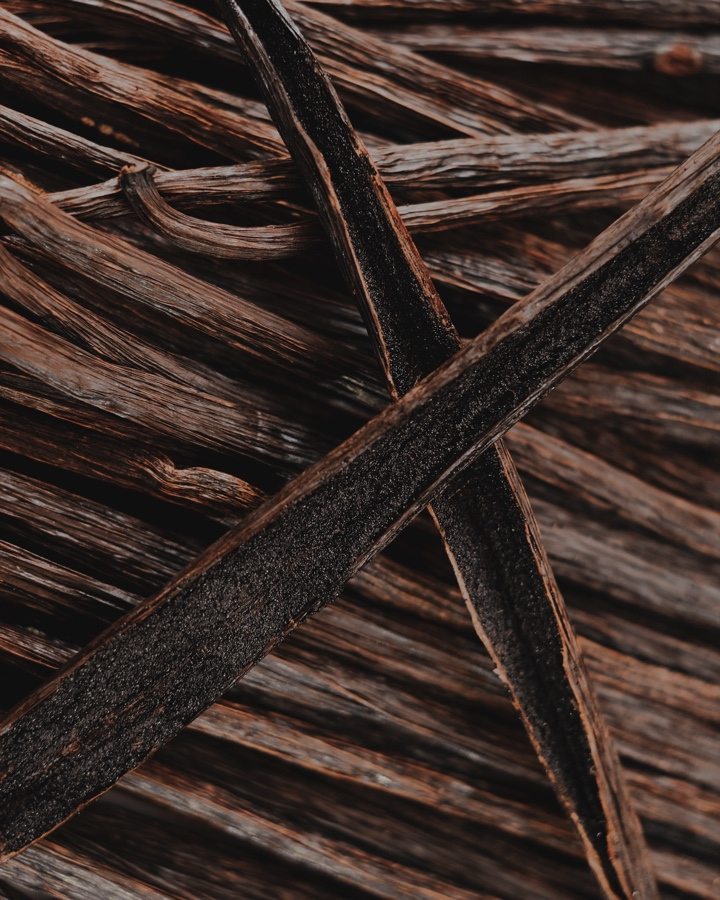
Ingrédients
- Vodka
- Liqueur de pêche
- Passoa
- Jus d'ananas & orange
- Sirop de vanille Bourbon
- Jus de citron vert
- Glaçons
« Vanille Bourbon pour une rondeur incomparable. »Ce cocktail pour mon événement
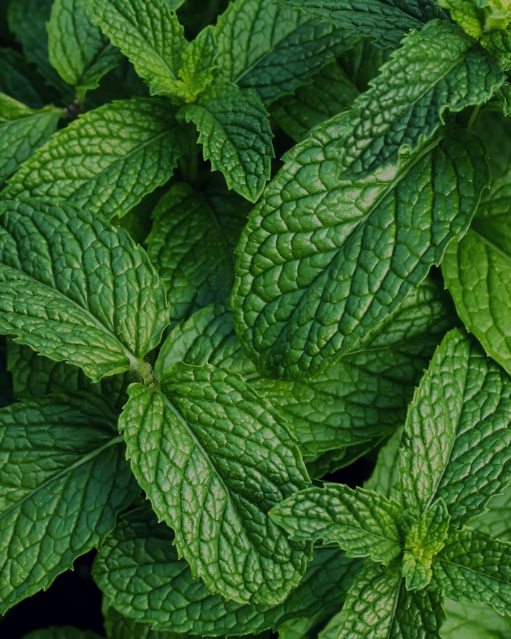
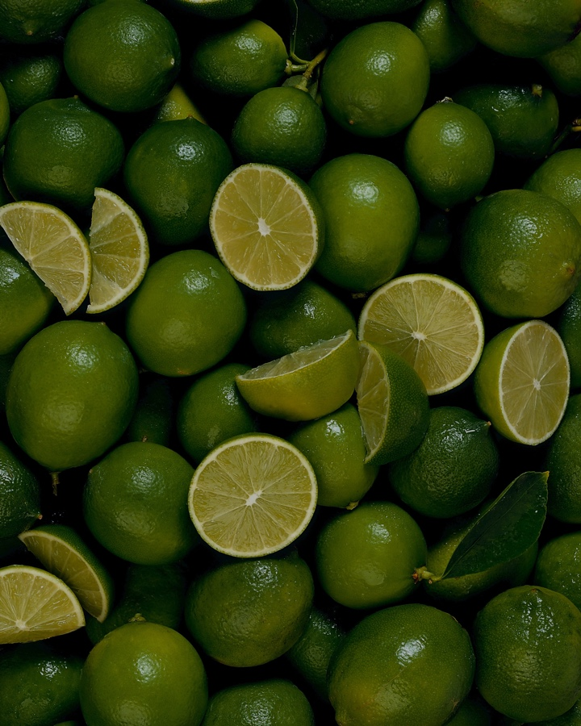
Ingrédients
- Liqueur de fleur de sureau
- Menthe fraîche
- Jus de citron vert
- Prosecco
- Perrier
- Glaçons
« Fleur de sureau artisanale du Luberon. »Ce cocktail pour mon événement
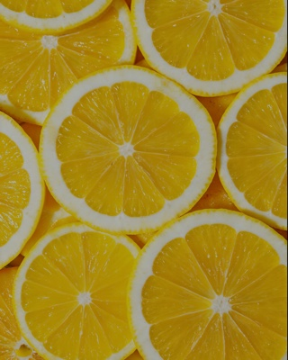
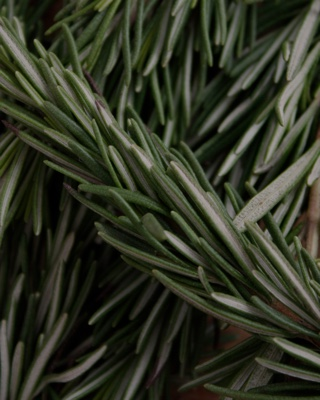
Ingrédients
- Gin
- Jus de citron
- Sirop de sucre de canne
- Perrier
- Glaçons
« Citron pressé à la minute, Perrier bien frais. »Ce cocktail pour mon événement
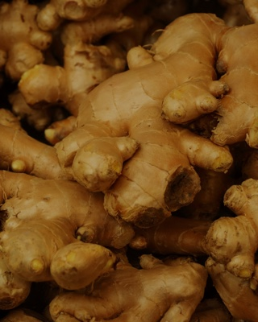
Ingrédients
- Vodka
- Citron vert
- Ginger Beer
- Glace pilée
« Servi dans le mugg en cuivre signature FMR. »Ce cocktail pour mon événement
Ingrédients
- Rhum ambré
- Citron vert pressé
- Cassonade
- Menthe
- Perrier
- Glace pilée
- Angostura
« Rhum ambré et Angostura — notre version du mojito. »Ce cocktail pour mon événement
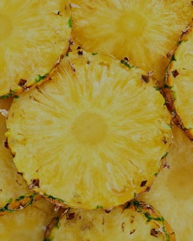
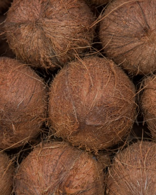
Ingrédients
- Malibu
- Jus d'ananas
- Jus de coco
- Glaçons
« Simple, généreux, apprécié de tous les palais. »Ce cocktail pour mon événement
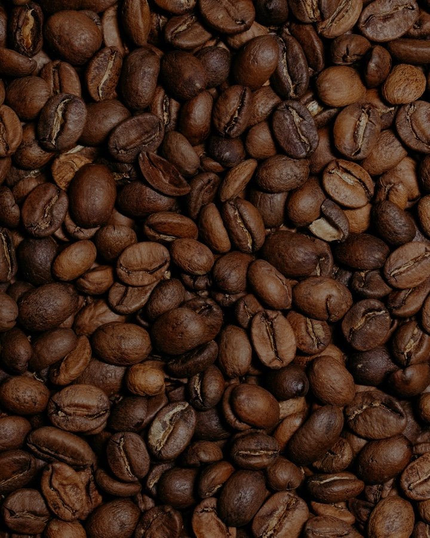
Ingrédients
- Amaretto
- Liqueur de café
- Jus d'ananas
- Jus d'orange
- Glaçons
« Le cocktail qui rappelle à chacun un souvenir. »Ce cocktail pour mon événement
Ingrédients
- Aperol
- Prosecco brut
- Eau gazeuse
- Rondelle d'orange
- Glaçons
« Le classique des apéros italiens, servi bien frais. »Ce cocktail pour mon événement
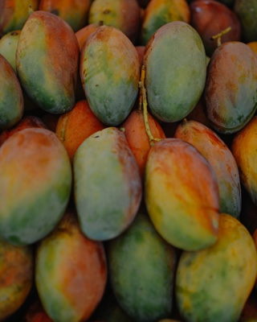
Ingrédients
- Ananas Victoria pressé, servi dans l'ananas
- Rhum ambré
- Crème de coco
- Sirop de vanille
- Purée de mangue
« Ananas Victoria pressé à la minute, servi dans son écrin naturel. »Ce cocktail pour mon événement
* Liste non exhaustive — notre carte évolue selon les saisons et vos envies.
Créations exclusives
Signatures FMR
Ces cocktails sont des créations originales. Ils ne se trouvent nulle part ailleurs.
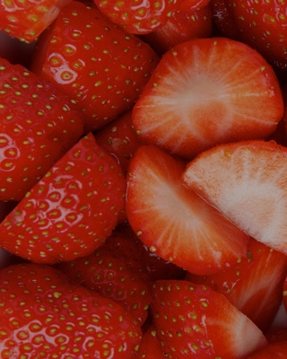
Ingrédients
- Gin
- Ginger Beer
- Citron Vert
- Perrier
- Fruit Rouge
- Glaçons
« La version adulte et caractérielle de la Shirley Temple. »Ce cocktail pour mon événement
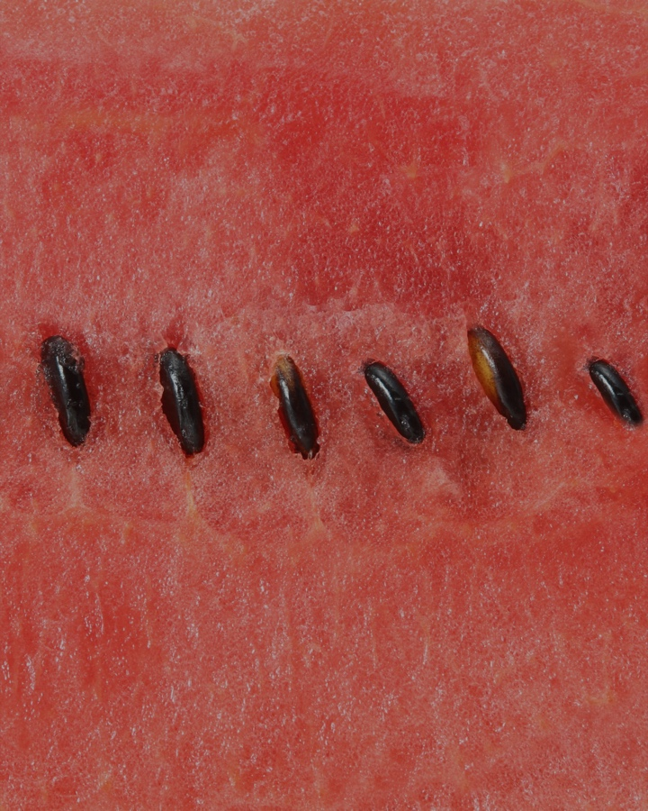
Ingrédients
- Passoa
- Sirop de vanille
- Jus de pastèque
- Poivre noir de Sichuan
- Glaçons
« Le Sichuan apporte un finish électrisant inattendu. »Ce cocktail pour mon événement
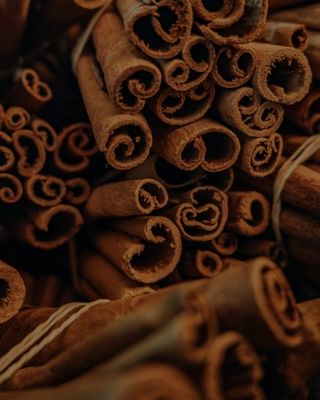
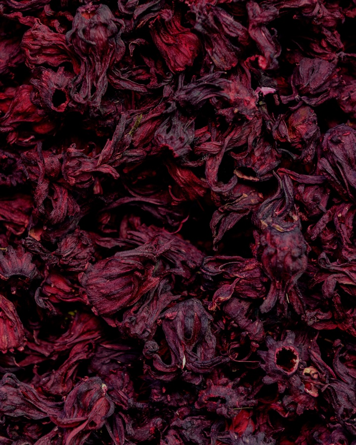
Ingrédients
- Rhum infusé à la cannelle et au miel
- Citron vert
- Cidre / Jus de pomme
- Sirop d'hibiscus
- Glaçons
« Rhum infusé 48h avec cannelle & miel du Luberon. »Ce cocktail pour mon événement
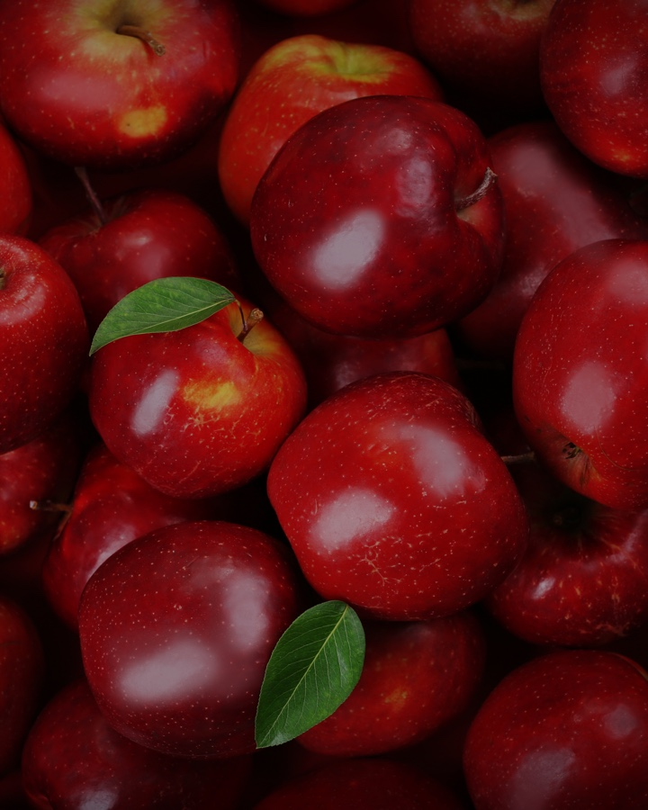
Ingrédients
- Pineau des Charentes
- Sirop d'hibiscus
- Jus de citron vert
- Menthe fraîche
- Cidre
« L'hibiscus colore et parfume, le cidre allège. »Ce cocktail pour mon événement
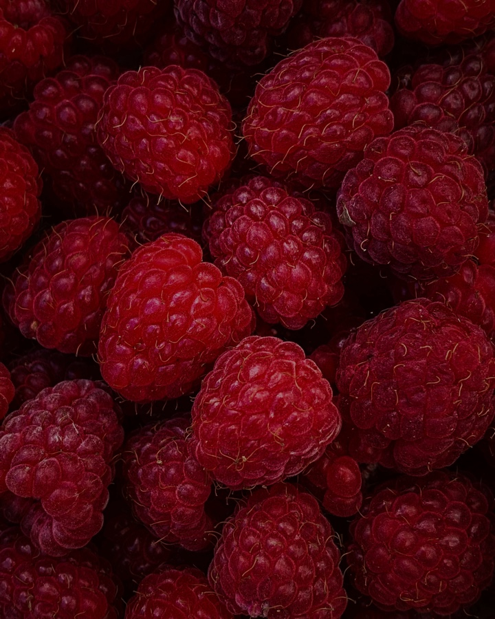
Ingrédients
- Soho
- Coulis de framboise
- Jus de citron vert
- Crème de framboise
- Perrier
- Glaçons
« Le coulis framboise maison fait toute la différence. »Ce cocktail pour mon événement
Ingrédients
- Pineau des Charentes
- Citron vert pressé
- Cassonade
- Menthe
- Perrier
- Glace pilée
« Le Pineau remplace le rhum — même fraîcheur, autre caractère. »Ce cocktail pour mon événement
Ingrédients
- Vermouth
- Ginger Beer
- Crème de pêche
- Glace pilée
« Servi dans le mugg en cuivre signature FMR. »Ce cocktail pour mon événement
Ingrédients
- Whisky Bourbon
- Écorce d'orange
- Angostura
- Sirop de vanille de Madagascar
- Ginger Beer
- Glaçons
« Vanille de Madagascar — un seul glaçon, technique irréprochable. »Ce cocktail pour mon événement
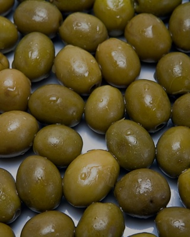
Ingrédients
- Gin infusé à l'EVOO
- Sirop de Sumac
- Olive
- Citron vert & citron
- Caviar de citron
« Gin infusé à l'huile d'olive extra-vierge de Provence. »Ce cocktail pour mon événement
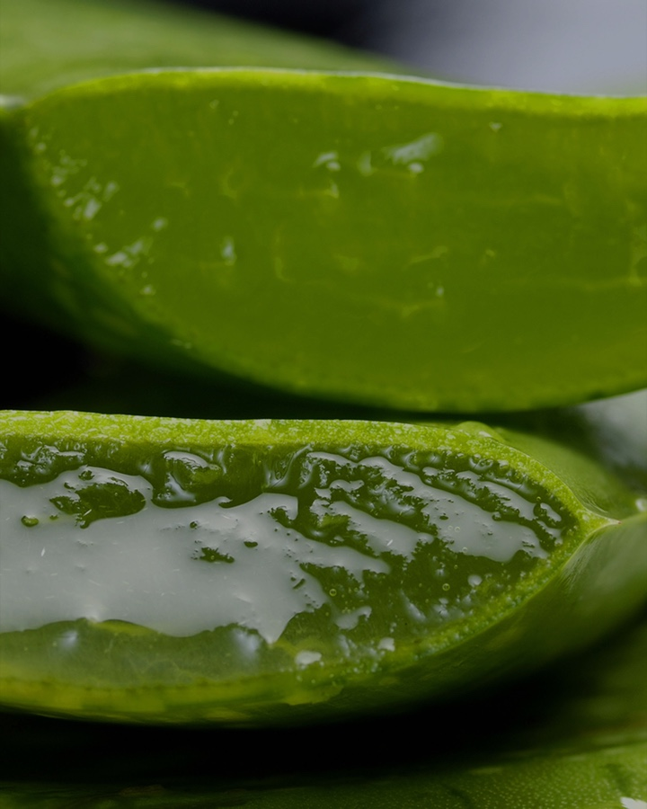
Ingrédients
- Gin
- Aloe Vera
- Sirop d'hibiscus
- Citron Vert
- Menthe
- Glaçons
« L'aloe vera est pressé à froid le jour J. »Ce cocktail pour mon événement
Ingrédients
- Rhum infusé cannelle, vanille et miel
- Jus de citron vert
- Sirop spicy
- Jus de Maracuja
- Perrier
- Glaçons
« Rhum infusé 48h — cannelle, vanille de Madagascar, miel du Luberon. »Ce cocktail pour mon événement
Pour tous les invités
Sans alcool & Mocktails
Des créations sans alcool aussi élaborées que nos cocktails. Parce que chaque invité mérite une belle expérience.

Ingrédients
- Ginger beer artisanale
- Citron vert pressé
- Eau gazeuse Perrier
- Mélange fruits rouges
- Fraise fraîche
« Festif pour tous, présenté avec la même attention. »Ce cocktail pour mon événement
Ingrédients
- Jus de pomme artisanal
- Jus d'ananas frais
- Sirop de fraise maison
- Citron vert
- Eau gazeuse Perrier
« Présenté avec la même élégance que nos cocktails. »Ce cocktail pour mon événement
Ingrédients
- Fruits de saison
- Herbes fraîches
- Sirops maison
- Eau gazeuse ou plate
- Garnitures exclusives
« Demandez-nous votre création — nous adorons relever le défi. »Ce cocktail pour mon événement
Unique en Provence
Bar à vins
régionaux
Pierre a parcouru les vignobles de Provence pour sélectionner les meilleurs crus — rosés de Bandol, rouges du Luberon, blancs de Cassis. Une dégustation guidée incluse pour vos invités.
- — Rouges : Bandol, Luberon, Ventoux
- — Blancs : Cassis, Provence AOC, Côtes-du-Rhône
- — Rosés : Côtes de Provence, Bandol, Palette
- — Conseil et animation dégustation inclus